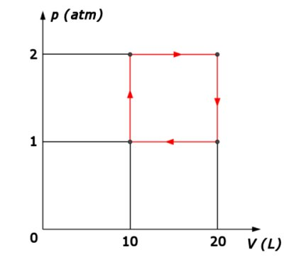
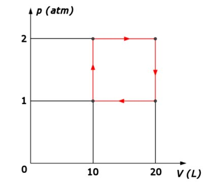
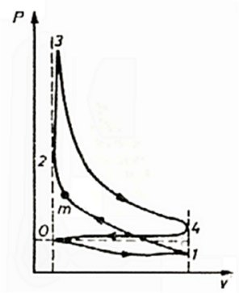
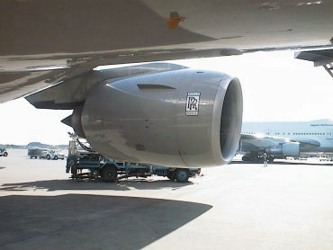

Comentează dacă tu eşti un motor termic.
Sunt oare armele de foc motoare termice?
Un motor termic funcţionează după ciclul reprezentat în figura 1.
 

Figura 1. Ciclul unui motor termic.
Motorul parcurge ciclul de zece ori pe secundă şi primeşte în fiecare ciclu 2 kJ sub formă de căldură.
a. În care dintre transformări motorul primeşte căldură şi în care cedează căldură?
b. În care dintre transformări motorul primeşte lucru mecanic şi în care efectuează lucru mecanic?
c. Cât este randamentul motorului?
d. Cât este puterea mecanică furnizată de motor?
Răspuns parţial: c. 50%; d. 10 kW.
Un motor Otto funcţionează cu un gaz al cărui exponent adiabatic este 1,4.
Cu cât creşte randamentul teoretic al motorului, dacă raportul de compresie este mărit de la 8 la 10?
Răspuns: Cu 6,5% (de la 56,5% la 60,2%).
Funcţionarea unui motor Otto real se deosebeşte considerabil de modelul său teoretic (figura 2).
|  | Figura 2. Ciclul real parcurs de un motor Otto. |
Pentru un raport de compresie 8, randamentul real este doar aproximativ 25%.
Prezintă câteva motive pentru care randamentul real este mult sub cel teoretic.
Răspuns: Compresia şi destinderea nu sunt riguros adiabatice, astfel încât o bună parte din căldura primită este transferată mediului − motorarele au nevoie de o instalaţie de răcire, altfel s−ar topi! Totodată, gazele rezultate în urma arderii sunt fierbinţi − evacuarea lor transferă mediului o mare parte din căldura primită. Mai mult, o parte considerabilă din lucrul mecanic efectuat se "risipeşte" datorită frecărilor (cine a pornit un motor Otto sau Diesel rotind o manivelă sau împingând vehiculul, realizează cât de mari sunt forţele de frecare care trebuiesc "învinse"!).
Compară avantajele şi dezavantajele motoarelor Otto şi Diesel.
De un mare succes se bucură acum vehiculele cu motor hibrid. Interesează−te în legătură cu acest subiect de mare viitor.
Avioanele moderne sunt propulsate de motoare turboreactoare (figura 3).
|  | Figura 3. Motorul turboreactor al unui avion. |
Acesta funcţionează după un ciclu alcătuit din două izobare şi două adiabate.
a. Reprezintă grafic ciclul în coordonate p−V.
b. Calculează randamentul acestui ciclu, în funcţie de raportul dintre presiunile extreme atinse pe parcursul ciclului.
O pompă termică funcţionează cu aer, după un ciclu format din două izobare şi două adiabate.
a. Reprezintă grafic acest ciclu în coordonate p−V.
b. Calculează eficienţa acestei pompe termice, în funcţie de raportul dintre presiunile extreme atinse pe parcursul ciclului.
Este oare o instalaţie de aer condiţionat o pompă termică, sau o instalaţie frigorifică? Ar putea fi şi una şi cealaltă? Argumentează răspunsurile tale.
Consultă broşura cu instrucţiunile de utilizare ale unui frigider. Consemnează informaţiile remarcabile pe care le−ai obţinut.
Este bine să introduci alimente fierbinţi în frigider? De ce oare?